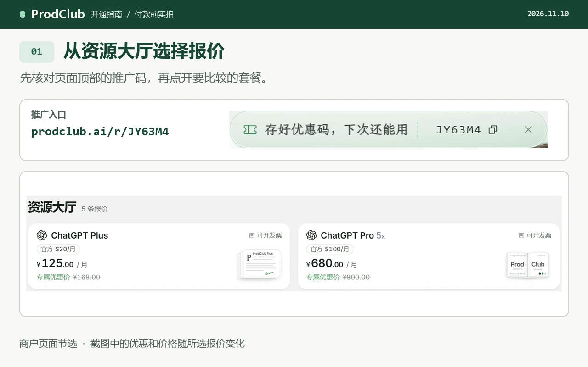
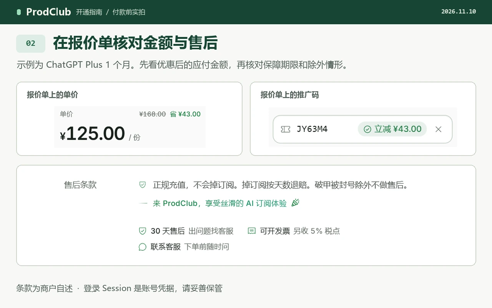

ProdClub 开通教程｜ChatGPT Plus / Pro 代充指南
ChatGPT Plus / Pro · 自己账号开通 · 优惠码 JY63M4 · 更新于
想用支付宝把 ChatGPT 会员开到自己的账号上？下面用 ProdClub 的报价页演示怎么选 Plus 或 Pro、核对折后金额，以及付款后到哪里查订单。
本文含推广链接。通过下方入口下单，维护者可能获得佣金或奖励。实际收款、订阅开通和售后由 ProdClub 处理，每笔订单的价格与保障期限都要单独确认。
为什么选择 ProdClub？
如果打算在自己的账号上开会员，可以先从报价页核对这几项。
- 付款方式写在报价上。商户帮助列有支付宝。想用微信或其他方式时，先看当前订单是否提供对应入口。
- 自己选套餐。Plus 和 Pro 分开报价，可以对照服务时长、档位与最终应付金额再下单。
- 订阅归到自己的账号。选择“自有账号开通”时，先核对准备升级的账号，以及原有订阅是否符合条件。
- 有开票需求可提前筛选。找标注可开发票的报价，再向商户确认开票信息、费用与办理时间。
- 能按订单追查。保留订单号、收据和购买时的售后条款，后续可以找回订单、询问进度或申请售后。
使用专属推广入口，核对页面上的优惠码 JY63M4。不同报价的优惠金额可能不同。
一步一步开通 Plus / Pro
- 核对账号。打开自己平时使用的 ChatGPT 账号，确认邮箱与当前套餐。已有订阅时，先查清续费渠道和到期时间。
- 准备网络访问。网络访问可以用这个注册入口先开一下（我常用）：FlowerCloud 注册入口。这是独立的网络服务推广链接，开通前请在服务方页面核对套餐和价格。
- 进入商户报价页。打开ProdClub 优惠开通页，确认优惠码
JY63M4，再查找所需档位。- 开通 ChatGPT Plus：到商户页选择 Plus，比较服务时长与应付总额。
- 开通 ChatGPT Pro：选择 Pro 的具体档位，已有 Plus 时先查升级规则。
- 看清订单内容。确认商品是订阅开通，查看适用账号、期限、付款与退款条款。需要发票时，确认报价有相应标注。
- 填写接收订单的邮箱。在商户页面核对拼写，保存订单号。之后找回订单或联系客服时会用到。
- 在订单页付款。核对收款方和折后金额，使用页面列出的方式完成付款。一笔付款没有返回结果时，先查原订单。
- 确认账号交付方式。商户的自有账号流程可能要求登录 Session。持有这段凭据的人可能访问你的账号，请先读商户对凭据的处理说明，再决定是否继续。
- 回查开通结果。对照订单页的状态，在自己的 ChatGPT 账号中查看会员档位。保留收据、订单号和售后截止时间。
视频教程
跟着演示找到推广入口、报价和应付金额。下方图文可逐步对照。
图文对照


常见问题
以下按 ProdClub 帮助中心的主题整理。每个答案都附有商户原说明，便于核对最新规则。
如何判断一笔代充报价是否适合自己？
对照三项内容：订阅开到哪个账号、实际支付多少钱、出现问题由谁处理。找不到订单查询方式或售后期限时，先补齐信息再付款。查看商户说明
自有账号、成品号和合租有什么区别？
自有账号开通是在你已有的账号上增加订阅。成品号由卖家提供另一个账号，合租则涉及多人共用。购买前核对报价写明的交付方式。查看商品类型
代充之后，账号一定能正常使用吗？
任何渠道都无法保证账号永远不会受限。账号使用受服务方规则约束，商户的订阅售后则以具体报价为准。查看账号风险说明
为什么订单页会提到 Session？
Session 是登录状态凭据。商户把它用于部分自有账号订单的开通流程，你可以在付款前先了解需要提供什么。查看商户流程
提交 Session 有什么风险？
接收方可能凭它访问你的账号。如果不能接受这种访问，就不要提交。不要把凭据发到客服聊天、群聊、截图或公开仓库。查看商户的凭据处理说明
能用支付宝、微信或 USDT 付款吗？
商户帮助列出支付宝，以及部分报价可用的 USDT。微信是否出现要看当前订单；若结算页没有该选项，请以显示的渠道为准。查看付款方式
哪些报价可以开发票？
选有开票标记的报价，在提交前问清抬头、费用和交付时间。付款后按商户要求提供订单号及开票资料。查看开票说明
开通后要找谁处理售后？
先找出订单号和该笔报价写明的保障期，再从订单页联系商户。描述套餐状态和出现问题的时间即可。查看售后入口说明
掉订阅或账号被限制，可以退款吗？
订单对应的订阅未按约定持续、账号被限制使用，商户对这两种情形有不同规则。对照原订单条款说明问题并要求确认处理方式。核对保障范围
已付款但还没开通，怎样申请退款？
回原订单查看是否有退款入口，读完申请后的处理方式再提交。如果入口没有出现，带订单号找商户查询。查看退款规则
已有 Plus，能直接升级 Pro 吗？
升级资格与现有 Plus 的计费地区、渠道和账号状态有关。把当前订阅情况与商户规则逐项核对，再确认是否能补差升级。查看升级条件
报价里的“菲区”指什么？
这是商户用来描述菲律宾计费地区的标签。涉及已有订阅、切换档位或地区限制时，先确认你的账号是否符合报价条件。查看地区说明
付款后多久能开通，卡住了怎么办？
在订单页查看进度。若页面提示需要核查或处理失败，保存订单号，按该笔订单的提示处理，避免重复付款。查看开通状态说明
“自有账号开通”和“接码”是同一种商品吗？
前者用于订阅升级；接码用于接收验证短信。需要会员时，核对商品标题、套餐名称和开通方式，再确认总额。查看开通方式
完成开通后，应该登录哪个账号？
购买自有账号订阅后，回到下单时选定的 ChatGPT 账号查看会员状态。若仍显示免费，先比较账号邮箱与订单信息，再联系商户。查看自有账号说明
使用注意
- 付款前保存报价、售后期限与退款条件。以后价格调整时，查询这笔订单仍应以购买时的约定为依据。
- 邮箱、订单号和支付凭证用于私下查单。公开反馈问题时请先遮住个人资料，更不要公开密码、验证码或 Session。
- 有现存订阅、通过应用商店购买过会员或使用团队账号时，先请商户核对资格，再决定是否下单。